Take two tangent fields V , W ∈ X [ M ] V,W\in \mathfrak{X}[\mathcal{M}] V , W ∈ X [ M ] manifold M \mathcal{M} M V p , W p V_p, W_p V p , W p tangent spaces T p M \mathcal{T}_p\mathcal{M} T p M p p p flow σ t \sigma_t σ t V V V Lie derivative of W W W V V V p p p
L : T p M × T p M ↦ T p M \mathcal{L}: \mathcal{T}_p\mathcal{M}\times\mathcal{T}_p\mathcal{M}\mapsto \mathcal{T}_p\mathcal{M} L : T p M × T p M ↦ T p M ∑ L V W ∣ x = φ ( p ) ≔ lim ϵ → 0 + 1 ϵ ( ∑ ( σ − ϵ ) ∗ W ∣ σ ϵ ( x ) − ∑ W ∣ x ) \left.\vphantom{\sum}\mathcal{L}_V W\right|_{x =\varphi(p)} \coloneqq \lim_{\epsilon\rightarrow 0^+} \frac{1}{\epsilon}\left(\left.\vphantom{\sum}\left(\sigma _{-\epsilon}\right)_* W\right|_{\sigma_\epsilon(x)} - \left.\vphantom{\sum}W\right|_{x}\right) ∑ L V W x = φ ( p ) : = ϵ → 0 + lim ϵ 1 ( ∑ ( σ − ϵ ) ∗ W σ ϵ ( x ) − ∑ W x ) where ( σ − ϵ ) ∗ \left(\sigma _{-\epsilon}\right)_* ( σ − ϵ ) ∗ pushforward map defined by the flow at fixed time and ( u , φ ) (u,\varphi) ( u , φ ) p p p W W W
For small ϵ \epsilon ϵ
σ μ ( ϵ , x ) ≃ σ μ ( 0 , x ) + ϵ d d t σ μ ( t , x ) ∣ t = 0 = x μ + ϵ V μ \sigma ^\mu (\epsilon,x) \simeq \sigma ^\mu (0,x) + \epsilon \left.\frac{d}{dt}\sigma ^\mu (t,x)\right|_{t=0} = x^\mu +\epsilon V^\mu σ μ ( ϵ , x ) ≃ σ μ ( 0 , x ) + ϵ d t d σ μ ( t , x ) t = 0 = x μ + ϵ V μ x ′ μ ≃ x μ + ϵ V μ x'^\mu \simeq x^\mu +\epsilon V^\mu x ′ μ ≃ x μ + ϵ V μ The basis of the tangent space changes according to:
e μ ′ = ∂ x ν ∂ x ′ μ e ν ≃ ( δ μ ν − ϵ ∂ μ V ν ) e ν e'_\mu = \frac{\partial x^\nu}{\partial x'^\mu}e_\nu \simeq \left(\delta^\nu_\mu - \epsilon\partial _\mu V^\nu\right)e_\nu e μ ′ = ∂ x ′ μ ∂ x ν e ν ≃ ( δ μ ν − ϵ ∂ μ V ν ) e ν The vector W W W x ′ x' x ′
∑ W ∣ x ′ ≃ ∑ W μ ∣ x + ϵ V e μ ′ ≃ ( W μ + ϵ V ν ∂ ν W μ ) ( δ μ ρ − ϵ ∂ μ V ρ ) e ρ \left.\vphantom{\sum}W\right|_{x'} \simeq \left.\vphantom{\sum}W^\mu \right|_{x+\epsilon V} e'_\mu \simeq \left(W^\mu +\epsilon V^\nu\partial _\nu W^\mu\right)\left(\delta^\rho_\mu - \epsilon\partial _\mu V^\rho\right)e_\rho ∑ W x ′ ≃ ∑ W μ x + ϵ V e μ ′ ≃ ( W μ + ϵ V ν ∂ ν W μ ) ( δ μ ρ − ϵ ∂ μ V ρ ) e ρ ∑ W ∣ x ′ ≃ W μ e μ + ϵ ( V ν ∂ ν W μ e μ − W μ ∂ μ V ν e ν ) \left.\vphantom{\sum}W\right|_{x'} \simeq W^\mu e_\mu + \epsilon\left(V^\nu \partial _\nu W^\mu e_\mu - W^\mu\partial _\mu V^\nu e_\nu\right) ∑ W x ′ ≃ W μ e μ + ϵ ( V ν ∂ ν W μ e μ − W μ ∂ μ V ν e ν )
∑ L V W ∣ x = ( V ν ∂ ν W μ − W ν ∂ ν V μ ) e μ \left.\vphantom{\sum}\mathcal{L}_V W\right|_{x} =\left(V^\nu\partial_\nu W^\mu - W^\nu\partial _\nu V^\mu\right)e_\mu ∑ L V W x = ( V ν ∂ ν W μ − W ν ∂ ν V μ ) e μ Lie brackets
We can denote a Lie derivative using Lie brackets :
[ ∙ , ∙ ] : T p M × T p M ↦ T p M \left[\,\bullet,\bullet\,\right]: \mathcal{T}_p\mathcal{M}\times\mathcal{T}_p\mathcal{M}\mapsto \mathcal{T}_p\mathcal{M} [ ∙ , ∙ ] : T p M × T p M ↦ T p M [ X , Y ] ≔ X ∘ Y − Y ∘ X [X,Y] \coloneqq X\circ Y - Y\circ X [ X , Y ] : = X ∘ Y − Y ∘ X In general, for a function f ∈ F [ M ] f\in\mathfrak{F}[\mathcal{M}] f ∈ F [ M ] X ( Y ( f ) ) X(Y(f)) X ( Y ( f ))
[ X , Y ] ( f ) = [ L X Y ] ( f ) [X,Y] (f) = [\mathcal{L}_X Y] (f) [ X , Y ] ( f ) = [ L X Y ] ( f ) [ X , Y ] = L X Y [X,Y] = \mathcal{L}_X Y [ X , Y ] = L X Y Properties
Lie brackets satisfy the following properties:
Antisymmetry:
[ V , W ] = − [ W , V ] [V,W] = - [W,V] [ V , W ] = − [ W , V ]
Bilinearity, take λ 1 , λ 2 ∈ R \lambda_1,\lambda_2\in\mathbb{R} λ 1 , λ 2 ∈ R [ V , λ 1 W 1 + λ 2 W 2 ] = λ 1 [ V , W 1 ] + λ 2 [ V , W 2 ] [V,\lambda_1W_1+\lambda_2W_2] = \lambda_1[V,W_1] +\lambda_2 [V,W_2] [ V , λ 1 W 1 + λ 2 W 2 ] = λ 1 [ V , W 1 ] + λ 2 [ V , W 2 ] [ λ 1 V 1 + λ 2 V 2 , W ] = λ 1 [ V 1 , W ] + λ 2 [ V 2 , W ] [\lambda_1 V_1 + \lambda_2 V_2 ,W] = \lambda_1[V_1,W] + \lambda _2 [V_2,W] [ λ 1 V 1 + λ 2 V 2 , W ] = λ 1 [ V 1 , W ] + λ 2 [ V 2 , W ]
Take f ∈ F [ M ] f\in\mathfrak{F}[\mathcal{M}] f ∈ F [ M ] [ V , f W ] = V ( f ) W + [ V , W ] [V,fW] = V(f)W +[V,W] [ V , f W ] = V ( f ) W + [ V , W ] L V ( f W ) = V ( f ) W + L V W \mathcal{L}_V(fW) = V(f) W +\mathcal{L}_V W L V ( f W ) = V ( f ) W + L V W
Bianchi identity :
[ [ V , W ] , Z ] + [ [ W , Z ] , V ] + [ [ Z , V ] , W ] = 0 [[V,W],Z]+[[W,Z],V]+[[Z,V],W]=0 [[ V , W ] , Z ] + [[ W , Z ] , V ] + [[ Z , V ] , W ] = 0
Geometric interpretation
TODO add drawing
σ μ ( t , x ) ≃ x μ + t V μ + t 2 2 V ν ∂ ν V μ \sigma ^\mu (t,x) \simeq x^\mu + tV^\mu +\frac{t^2}{2}V^\nu\partial _\nu V^\mu σ μ ( t , x ) ≃ x μ + t V μ + 2 t 2 V ν ∂ ν V μ τ μ ( t , x ) = x μ + t W μ + t 2 2 W ν ∂ ν W μ \tau ^\mu (t,x) = x^\mu + tW^\mu+\frac{t^2}{2}W^\nu\partial _\nu W^\mu τ μ ( t , x ) = x μ + t W μ + 2 t 2 W ν ∂ ν W μ Note that first order and non-mixed second order terms are going to cancel out during computation:
τ μ ( δ , σ ( ϵ , x ) ) ≃ ∑ ( x μ + ϵ V μ + ϵ 2 2 V ν ∂ ν V μ ) + ( δ W μ + δ ϵ V ν ∂ ν W μ + δ 2 2 W ν ∂ ν W μ ) \begin{split}
\tau ^\mu (\delta,\sigma(\epsilon ,x)) \simeq \hphantom{\sum}& \left(x^\mu + \epsilon V^\mu +\frac{\epsilon^2}{2}V^\nu\partial _\nu V^\mu\right)\\
+&\left(\delta W^\mu+\delta\epsilon V^\nu\partial _\nu W^\mu +\frac{\delta^2}{2} W^\nu\partial _\nu W^\mu\right)
\end{split} τ μ ( δ , σ ( ϵ , x )) ≃ ∑ + ( x μ + ϵ V μ + 2 ϵ 2 V ν ∂ ν V μ ) ( δ W μ + δϵ V ν ∂ ν W μ + 2 δ 2 W ν ∂ ν W μ ) σ μ ( ϵ , τ ( δ , x ) ) ≃ ∑ ( x μ + δ W μ + δ 2 2 W ν ∂ ν W μ ) + ( ϵ V μ + δ ϵ W ν ∂ ν V μ + ϵ 2 2 V ν ∂ ν V μ ) \begin{split}
\sigma ^\mu (\epsilon,\tau(\delta ,x)) \simeq \hphantom{\sum}& \left(x^\mu + \delta W^\mu +\frac{\delta^2}{2}W^\nu\partial _\nu W^\mu\right)\\
+&\left(\epsilon V^\mu+\delta\epsilon W^\nu\partial _\nu V^\mu +\frac{\epsilon^2}{2} V^\nu\partial _\nu V^\mu\right)
\end{split} σ μ ( ϵ , τ ( δ , x )) ≃ ∑ + ( x μ + δ W μ + 2 δ 2 W ν ∂ ν W μ ) ( ϵ V μ + δϵ W ν ∂ ν V μ + 2 ϵ 2 V ν ∂ ν V μ ) Therefore:
τ μ ( δ , σ ( ϵ , x ) ) − σ μ ( ϵ , τ ( δ , x ) ) = δ ϵ [ V , W ] μ \tau ^\mu (\delta,\sigma(\epsilon ,x))- \sigma ^\mu (\epsilon,\tau(\delta ,x)) = \delta\epsilon[V,W]^\mu τ μ ( δ , σ ( ϵ , x )) − σ μ ( ϵ , τ ( δ , x )) = δϵ [ V , W ] μ τ μ ( δ , σ ( ϵ , x ) ) − σ μ ( ϵ , τ ( δ , x ) ) = δ ϵ ( L V W ) μ \tau ^\mu (\delta,\sigma(\epsilon ,x))- \sigma ^\mu (\epsilon,\tau(\delta ,x)) = \delta\epsilon(\mathcal{L}_VW)^\mu τ μ ( δ , σ ( ϵ , x )) − σ μ ( ϵ , τ ( δ , x )) = δϵ ( L V W ) μ Extensions to other objects
Action on vector basis
Starting from
L V W = ( V ν ∂ ν W μ − W ν ∂ ν V μ ) e μ \mathcal{L}_V W =\left(V^\nu\partial_\nu W^\mu - W^\nu\partial _\nu V^\mu\right)e_\mu L V W = ( V ν ∂ ν W μ − W ν ∂ ν V μ ) e μ We try to find the action of the Lie derivative on the elements of the vector basis by considering its action on the vector with components W ν = 1 W^\nu = 1 W ν = 1 ν = μ \nu =\mu ν = μ 0 0 0
L V e μ = − ∂ μ V ρ e ρ \mathcal{L}_V e_\mu = -\partial _\mu V^\rho e_\rho L V e μ = − ∂ μ V ρ e ρ ( L V e μ ) ρ = − ∂ μ V ρ (\mathcal{L}_V e_\mu)^\rho = -\partial _\mu V^\rho ( L V e μ ) ρ = − ∂ μ V ρ Extension to functions
Take f ∈ F [ M ] f\in\mathfrak{F}[\mathcal{M}] f ∈ F [ M ]
L V f ≔ V ( f ) \mathcal{L}_Vf \coloneqq V(f) L V f : = V ( f ) Which somewhat agrees with L V ( f W ) = V ( f ) W + L V W \mathcal{L}_V(fW) = V(f) W +\mathcal{L}_V W L V ( f W ) = V ( f ) W + L V W
The inner product defined on fields is basically a scalar function; following this notion, we try to extend the Lie derivative to one-forms starting from:
L V ⟨ ω , W ⟩ = V ( ∑ ⟨ ω , W ⟩ ∑ ) \mathcal{L}_V\corr{\omega,W} = V\left(\vphantom{\sum}\corr{\omega,W}\vphantom{\sum}\right) L V ⟨ ω , W ⟩ = V ( ∑ ⟨ ω , W ⟩ ∑ ) Then we define the chain rule:
L V ⟨ ω , W ⟩ = ( L V ω ) μ W μ + ω μ ( L V W ) μ \mathcal{L}_V\corr{\omega,W} = (\mathcal{L}_V \omega)_\mu W^\mu +\omega _\mu (\mathcal{L}_V W)^\mu L V ⟨ ω , W ⟩ = ( L V ω ) μ W μ + ω μ ( L V W ) μ Then, gathering the correct terms:
( L V ω ) μ = ω ν ∂ μ V ν + V ν ∂ ν ω μ (\mathcal{L}_V \omega)_\mu= \omega_\nu \partial _\mu V^\nu +V^\nu\partial _\nu \omega_\mu ( L V ω ) μ = ω ν ∂ μ V ν + V ν ∂ ν ω μ L V ω = ( ω ν ∂ μ V ν + V ν ∂ ν ω μ ) d x μ \mathcal{L}_V \omega= (\omega_\nu \partial _\mu V^\nu +V^\nu\partial _\nu \omega_\mu)dx^\mu L V ω = ( ω ν ∂ μ V ν + V ν ∂ ν ω μ ) d x μ Action on dual basis
Taking ω ν = 1 \omega_\nu =1 ω ν = 1 ν = μ \nu =\mu ν = μ 0 0 0
L V d x μ = ( ∂ ρ V μ ) d x ρ \mathcal{L}_V dx^\mu= (\partial _\rho V^\mu)dx^\rho L V d x μ = ( ∂ ρ V μ ) d x ρ ( L V d x μ ) ρ = ∂ ρ V μ (\mathcal{L}_V dx^\mu)_\rho= \partial _\rho V^\mu ( L V d x μ ) ρ = ∂ ρ V μ Extension to tensors
We can derive the action of the Lie derivative on any tensor by applying the chain rule to any product and tensor product: in fact, any tensor is basically the product of a function with the tensor product of the bases of the tangent and cotangent spaces
T = \tensor T μ 1 . . . μ q ν 1 . . . ν r e μ 1 ⊗ . . . ⊗ e μ q ⊗ d x ν 1 ⊗ . . . ⊗ d x ν r T = \tensor{T}{{^{\mu_1...\mu_q}}{_{\nu_1...\nu_r}}}\,\,e_{\mu_1}\otimes...\otimes e_{\mu_q}\otimes dx^{\nu_1}\otimes...\otimes dx^{\nu_r} T = \tensor T μ 1 ... μ q ν 1 ... ν r e μ 1 ⊗ ... ⊗ e μ q ⊗ d x ν 1 ⊗ ... ⊗ d x ν r Then, the Lie derivative on T T T
L V T = + ( L V \tensor T μ 1 . . . μ q ν 1 . . . ν r ) e μ 1 ⊗ . . . ⊗ e μ q ⊗ d x ν 1 ⊗ . . . ⊗ d x ν r + \tensor T μ 1 . . . μ q ν 1 . . . ν r ( L V e μ 1 ) ⊗ . . . ⊗ e μ q ⊗ d x ν 1 ⊗ . . . ⊗ d x ν r + . . . + \tensor T μ 1 . . . μ q ν 1 . . . ν r e μ 1 ⊗ . . . ⊗ ( L V e μ q ) ⊗ d x ν 1 ⊗ . . . ⊗ d x ν r + \tensor T μ 1 . . . μ q ν 1 . . . ν r e μ 1 ⊗ . . . ⊗ e μ q ⊗ ( L V d x ν 1 ) ⊗ . . . ⊗ d x ν r + . . . + \tensor T μ 1 . . . μ q ν 1 . . . ν r e μ 1 ⊗ . . . ⊗ e μ q ⊗ d x ν 1 ⊗ . . . ⊗ ( L V d x ν r ) \begin{split}
\mathcal{L}_VT = &\hphantom{+} (\mathcal{L}_V\tensor{T}{{^{\mu_1...\mu_q}}{_{\nu_1...\nu_r}}})\,\,e_{\mu_1}\otimes...\otimes e_{\mu_q}\otimes dx^{\nu_1}\otimes...\otimes dx^{\nu_r}\\
&+ \tensor{T}{{^{\mu_1...\mu_q}}{_{\nu_1...\nu_r}}}\,\,(\mathcal{L}_Ve_{\mu_1})\otimes...\otimes e_{\mu_q}\otimes dx^{\nu_1}\otimes...\otimes dx^{\nu_r}\\
&+... \\
&+ \tensor{T}{{^{\mu_1...\mu_q}}{_{\nu_1...\nu_r}}}\,\,e_{\mu_1}\otimes...\otimes (\mathcal{L}_Ve_{\mu_q})\otimes dx^{\nu_1}\otimes...\otimes dx^{\nu_r}\\
&+\tensor{T}{{^{\mu_1...\mu_q}}{_{\nu_1...\nu_r}}}\,\,e_{\mu_1}\otimes...\otimes e_{\mu_q}\otimes (\mathcal{L}_Vdx^{\nu_1})\otimes...\otimes dx^{\nu_r}\\
&+...\\
&+\tensor{T}{{^{\mu_1...\mu_q}}{_{\nu_1...\nu_r}}}\,\,e_{\mu_1}\otimes...\otimes e_{\mu_q}\otimes dx^{\nu_1}\otimes...\otimes (\mathcal{L}_Vdx^{\nu_r})
\end{split} L V T = + ( L V \tensor T μ 1 ... μ q ν 1 ... ν r ) e μ 1 ⊗ ... ⊗ e μ q ⊗ d x ν 1 ⊗ ... ⊗ d x ν r + \tensor T μ 1 ... μ q ν 1 ... ν r ( L V e μ 1 ) ⊗ ... ⊗ e μ q ⊗ d x ν 1 ⊗ ... ⊗ d x ν r + ... + \tensor T μ 1 ... μ q ν 1 ... ν r e μ 1 ⊗ ... ⊗ ( L V e μ q ) ⊗ d x ν 1 ⊗ ... ⊗ d x ν r + \tensor T μ 1 ... μ q ν 1 ... ν r e μ 1 ⊗ ... ⊗ e μ q ⊗ ( L V d x ν 1 ) ⊗ ... ⊗ d x ν r + ... + \tensor T μ 1 ... μ q ν 1 ... ν r e μ 1 ⊗ ... ⊗ e μ q ⊗ d x ν 1 ⊗ ... ⊗ ( L V d x ν r ) Example: metrics
Take the tensor:
h = h μ ν d x μ ⊗ d x ν h = h_{\mu\nu}dx^\mu\otimes dx^\nu h = h μν d x μ ⊗ d x ν Applying the chain rule we obtain:
L V h = ( V ρ ∂ ρ h μ ν + h ρ ν ∂ μ V ρ + h μ ρ ∂ ν V ρ ) d x μ ⊗ d x ν \mathcal{L}_Vh = \left(V^\rho \partial _\rho h_{\mu\nu} +h_{\rho\nu}\partial _\mu V^\rho +h_{\mu\rho}\partial _\nu V^\rho\right)dx^\mu\otimes dx ^\nu L V h = ( V ρ ∂ ρ h μν + h ρ ν ∂ μ V ρ + h μ ρ ∂ ν V ρ ) d x μ ⊗ d x ν